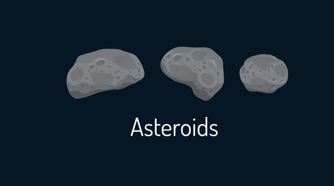

Asteroids Haqqında Məlumat
The asteroid belt didn’t mold into a planet. This is because when you have two large bodies like Jupiter and the sun in the solar system, you have two large opposing forces of gravity pulling on each other. Think of the asteroid belt as being smack dab in the middle of a gravity tug-of-war. Neither side is winning so asteroids are stuck in between. Location: Asteroid Belt Distance to Sun: 400,000,000 km Composition: Rock, Metal, and Ice The asteroid belt is kilometers in size. If you were to take all the asteroids and put them together, they would make up just 4% of the mass of the moon. This means that there’s really not a lot of material in the asteroid belt orbiting the sun. The largest asteroid is Ceres which is considered a dwarf planet because of its size.
Şəkil
 “Asteroids are odd-shaped rocks made of metal and other elements. There are at least 100,000 known asteroids and we’ve named thousands of them. Most of them are in the asteroid belt stuck between Mars and Jupiter.”
“Asteroids are odd-shaped rocks made of metal and other elements. There are at least 100,000 known asteroids and we’ve named thousands of them. Most of them are in the asteroid belt stuck between Mars and Jupiter.”
